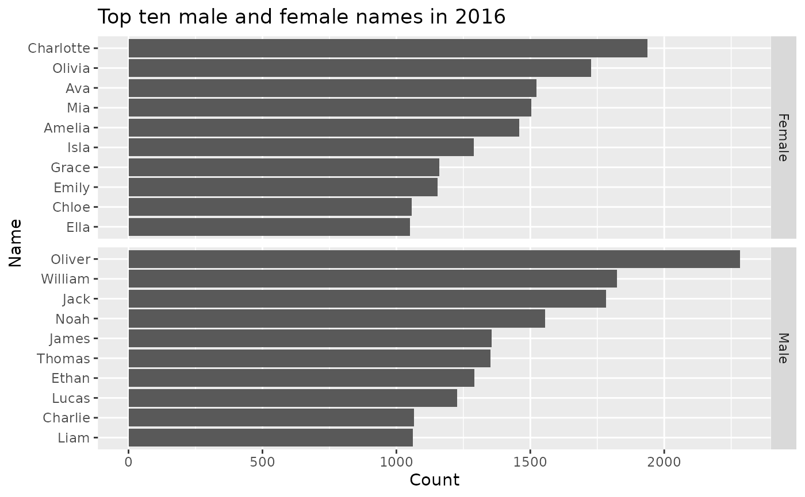

The ozbabynames package provides the data object `ozbabynames` containing popular Australian baby names by sex, state and year. The coverage is very uneven, with some states only providing very recent data, and some states only providing the top 50 or 100 names. The ACT do not provide counts, and so no ACT data are included. South Australia has by far the best data, with full coverage of all names back to 1944.
Examples
head(ozbabynames)
#> # A tibble: 6 × 5
#> name sex year count state
#> <chr> <chr> <int> <dbl> <chr>
#> 1 Isla Female 2023 403 New South Wales
#> 2 Amelia Female 2023 399 New South Wales
#> 3 Olivia Female 2023 381 New South Wales
#> 4 Mia Female 2023 347 New South Wales
#> 5 Charlotte Female 2023 338 New South Wales
#> 6 Ava Female 2023 284 New South Wales
# Plot most popular names in 2016
library(ggplot2)
library(dplyr)
#>
#> Attaching package: ‘dplyr’
#> The following objects are masked from ‘package:stats’:
#>
#> filter, lag
#> The following objects are masked from ‘package:base’:
#>
#> intersect, setdiff, setequal, union
ozbabynames |>
filter(year==2016) |>
group_by(sex,name) |>
summarise(count = sum(count)) |>
arrange(-count) |>
top_n(10) |>
ungroup() |>
ggplot(aes(x=reorder(name, count), y=count, group=sex)) +
geom_bar(stat='identity') +
facet_grid(sex ~ ., scales = "free_y") +
coord_flip() +
ylab("Count") + xlab("Name") +
ggtitle("Top ten male and female names in 2016")
#> `summarise()` has grouped output by 'sex'. You can override using the `.groups`
#> argument.
#> Selecting by count
